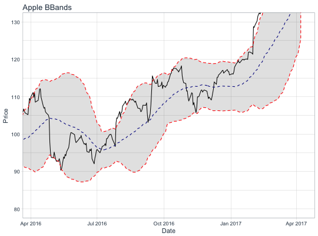

The theme_tq() function creates a custom theme using tidyquant colors.
theme_tq(base_size = 11, base_family = "") theme_tq_dark(base_size = 11, base_family = "") theme_tq_green(base_size = 11, base_family = "")
| base_size | base font size |
|---|---|
| base_family | base font family |
# Load libraries library(tidyquant) # Get stock prices AAPL <- tq_get("AAPL") # Plot using ggplot with theme_tq AAPL %>% ggplot(aes(x = date, y = close)) + geom_line() + geom_bbands(aes(high = high, low = low, close = close), ma_fun = EMA, wilder = TRUE, ratio = NULL, n = 50) + coord_x_date(xlim = c(today() - years(1), today()), ylim = c(80, 130)) + labs(title = "Apple BBands", x = "Date", y = "Price") + theme_tq()